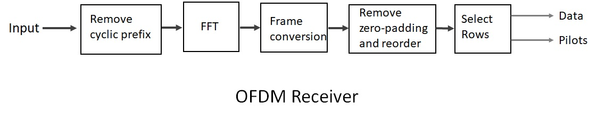
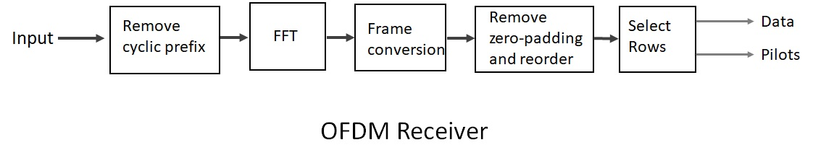

"WiFi Sensing will be everywhere and will become a fundamental technology for our everyday lives in future"
Wi-Fi Sensing technology uses Wi-Fi signals to sense activities and interpret movement. Wi-Fi signals are sensitive to environmental dynamics thus can be used for the sensing purpose. Wi-Fi signals are distorted by physical objects, including individuals moving around the home. These disruptions are picked up by Wi-Fi sensing technology and analyzed by machine learning algorithms to determine the cause (e.g., human presence, activity, movement). Wi-Fi signals called channel state information (CSI) are used to perform the sensing tasks. Wi-Fi devices compute CSI of the wireless channel to overcome interference from the environment so as to decode the data packet properly at the receiver side. The CSI is designed primarily for data communication. CSI varies as changes in the environment alter the paths. The CSI captures a huge amount of information about the environment. So, in essence, we perform Wi-Fi sensing by decoding the information hidden in the CSI. Wi-Fi sensing has an advantage over existing solutions in that for most applications, it uses existing Wi-Fi infrastructure and no need for any extra hardware, Wi-Fi signals penetrate through walls, enabling out of line-of-sight (LoS) operations;, an important consideration for security monitoring applications. And because it doesn’t rely on image data, it retains a degree of privacy. Application of Wi-Fi sensing includes, home security, motion and presence detection, gesture recognition, health monitoring, non-line-of-sight or ‘through the wall’ sensing, people counting, localization, fall detection, sleep monitoring, and daily activity monitoring. The challenges such as, (1) Wi-Fi signals are vulnerable to interference that decreases their accuracy. (2) Coverage and signal strength is another consideration for Non-Line-of Sight ( NLoS) applications. (3) Multipath propagation : this occurs where a Wi-Fi signal travels along more than one path between the transmitter and receiver. This is caused by refraction or reflection (e.g., reflecting off surrounding surfaces) and reduces the quality of the received signal. (4) Occlusion of the Wi-Fi signal : certain objects can stand in the way and block the Wi-Fi signal. (5) Presence of large numbers of people: Wi-Fi sensing, was shown to be inaccurate at detecting people in large crowds. Through the use of advanced AI/ML/signal processing techniques. WiFi Sensing technology can overcome the challenges and improve the depth of understanding in given environments.
Wireless Communication
Orthogonal Frequency Division Multiplexing (OFDM) is a modulation technique that is used for many of the latest wireless communcation standards. OFDM is becoming widely applied communications systems due to its high rate transmission capability with high bandwidth efficiency and its robustness with regards to multipath fading and delay. The basic idea underlying OFDM systems is the division of the available frequency spectrum or channel into several subcarriers. To obtain the high efficiency, the frequency of the subcarriers are overlapping and orthogonal.
There are two main problems in designing channel estiamtors for wireless OFDM systems. The first problem is the arrangement of pilot information, where pilot means the reference signal used by both transmitter and receivers. The second problem is the designing of an estimator with low complexity and good channel tracking ability.
 

OFDM technique is used in several applications :
- Wi-Fi : Standards like 802.11a, 802.11n, 802.11ac and more
- WiMAX
- LTE
- 5G and Beyond
- Underwater communications
- Optical light modulation
- Digital audio radio